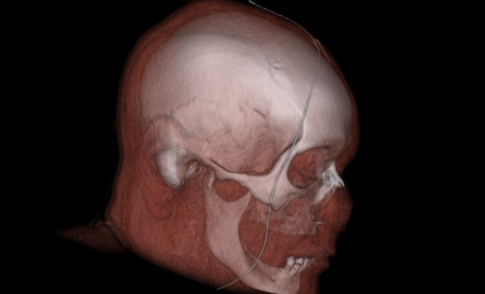
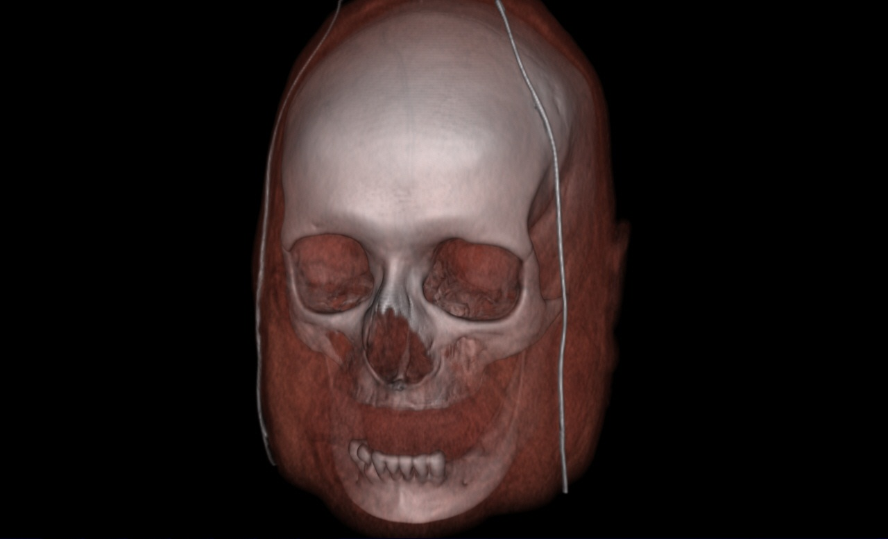

CS530 Introduction to Scientific Visualization Report for Project Four
_______________________________________________________________________________________________________________________________________
Direct Volume Rendering
Task 1 Salient isovalues
Head CT
First use the code in project 3 to identify important isosurfaces in the head CT dataset (vfhead-smooth-large.vtk) and the delta wing CFD dataset (delta-vorticitymag.vtk).
Using the code of task 1&2 in project 3, I found the isovalues for skin, muscle, skull and teeth to be 800, 1045, 1180 and 2800 respectively. Below shows the results. The range of the slider bar is from 0 to 3000.
Skin
Muscle
Skull
Teeth
After finding the feature isovalues, I used color mapping and transparency to show all the isosurfaces in the dataset. The color mapping for the head CT dataset remains the same with that in project 3. Below shows the results for head CT dataset. The opacity values are 0.1, 0.3, 0.8, and 1.0 for skin, muscle, skull and teeth respectively (Unfortunately my graphic card - ATI Radeon HD 3400 does not support depth peeling. The depth peeling results shown below were screenshot by a friend on his machine. In project 3 I did the same thing).
CFD
Using the code of task 1&2 in project 3, I found the isovalues for the larger outside vortice tubes, multi-layers vortices, vortice tubes still with recirculation bubbles and inner vortice tubes to be 2500, 11000, 25000 and 50000 respectively. Below shows the results. The range of the slider bar is from 0 to 66000.
Larger outside vortice tube
Multi-layers vortices (red circles denote recirculation bubbles)
Vortice tubes still with recirculation bubbles
Inner vortice tubes
After finding the feature isovalues, I used color mapping and transparency to show all the isosurfaces in the dataset. I used red and opacity 0.1 for isovalue 2500, green and opacity 0.3 for isovalue 11000, blue and opacity 0.7 for isovalue 25000, white and opacity 1.0 for isovalue 50000. Below shows the results.
Task 2 Transfer function design
Head CT
In this task I designed three transfer function sets. For the first one, I simply used the values for isosurfaces and color transfer function in task 1. The detail of the color transfer function and the opacity transfer function is as follows.
colorTransferFunction->AddRGBPoint(799, 0.0, 0.0, 0.0);
colorTransferFunction->AddRGBPoint(800, 241.0/255, 162.0/255, 123.0/255);
colorTransferFunction->AddRGBPoint(1045, 245.0/255, 90.0/255, 71.0/255);
colorTransferFunction->AddRGBPoint(1180, 255.0/255, 246.0/255, 251.0/255);
colorTransferFunction->AddRGBPoint(2800, 1.0, 1.0, 1.0);
opacityTransferFunction->AddPoint(799, 0.0);
opacityTransferFunction->AddPoint(800, 0.1);
opacityTransferFunction->AddPoint(1045, 0.2);
opacityTransferFunction->AddPoint(1180, 0.8);
opacityTransferFunction->AddPoint(2800, 1.0);
Also I used vtkVolumeRayCastMapper::GetSampleDistance function to query the default sampling distance which is 1. Then I set it to 0.2 through vtkVolumeRayCastMapper::SetSampleDistance function. Below shows the visualization results (vfhead-smooth-large.vtk).
From the above picture we can see that the internal stucture is blocked by the muscle part. The result indicates that the opacity of skin and muscle should be even lower. In the second opacity transfer function design, I changed the control points like this:
opacityTransferFunction->AddPoint(799, 0.0);
opacityTransferFunction->AddPoint(800, 0.02);
opacityTransferFunction->AddPoint(1045, 0.04);
opacityTransferFunction->AddPoint(1180, 0.8);
opacityTransferFunction->AddPoint(2800, 1.0);
The color transfer function remains the same. Below shows the visualiztion result of the second transfer function sets.
This one is still not good enough. We can see that the teeth is somewhat blocked by the muscle. Then I tried to add a control point of muscle and set its opacity value very low and increase the point value for skull. The third opacity transfer function is as follows.
opacityTransferFunction->AddPoint(799, 0.0);
opacityTransferFunction->AddPoint(800, 0.02);
opacityTransferFunction->AddPoint(1045, 0.04);
opacityTransferFunction->AddPoint(1180, 0.04);
opacityTransferFunction->AddPoint(1500, 0.8);
opacityTransferFunction->AddPoint(2800, 1.0);
The color transfer function remains the same. Below shows the visualiztion results of the third transfer function sets. I think this one is good enough.

CFD
In this task I designed two transfer function sets. For the first one, I simply used the values for isosurfaces and color transfer function in task 1. The detail of the color transfer function and the opacity transfer function is as follows.
colorTransferFunction->AddRGBPoint(2400, 0.0, 0.0, 0.0);
colorTransferFunction->AddRGBPoint(2500, 1.0, 0.0, 0.0);
colorTransferFunction->AddRGBPoint(11000, 0.0, 1.0, 0.0);
colorTransferFunction->AddRGBPoint(25000, 0.0, 0.0, 1.0);
colorTransferFunction->AddRGBPoint(50000, 1.0, 1.0, 1.0);
opacityTransferFunction->AddPoint(2400, 0.0);
opacityTransferFunction->AddPoint(2500, 0.02);
opacityTransferFunction->AddPoint(11000, 0.04);
opacityTransferFunction->AddPoint(25000, 0.8);
opacityTransferFunction->AddPoint(50000, 1.0);
Again sampling distance is set to 0.2. Below shows the visualization results (delta-vorticitymag.vtk).
The objective in designing the opacity transfer function is to reveal as much as possible of the internal structures of the dataset. In the second try I set the opacities of outer layers to a very low value. The new opacity transfer function is like
opacityTransferFunction->AddPoint(2400, 0.0);
opacityTransferFunction->AddPoint(2500, 0.006);
opacityTransferFunction->AddPoint(11000, 0.006);
opacityTransferFunction->AddPoint(25000, 0.02);
opacityTransferFunction->AddPoint(50000, 0.6);
The color transfer function remains the same. Below shows the visualization results. Now we can see the inner tubes.
Task 3 Volume rendering vs. isosurfacing
My own graphic card does not support depth peeling. For task 3 I will just use the same pictures (depth peeling isosurfaces visualization) in task 1 to compare with the volumn rending visualization in task 2. I adjust the camera settings in volumn rending visualization so that the camera settings for both cases are almost the same. Below shows the pictures for comparision .


When designing the opacity transfer functions in task 2 I first follow the opacity values used in task 1. However the result of doing so is that in the volumn rendering the inner structures are basically blocked by the outer structures. In order to reveal the inner structures I need to assign very low opacity values to the outer structures. This is because the volumn rendering is essentially rendering an infinite set of isosurfaces, which makes the inner structures more obscure due to the accumulated opacities.
Other observations:
Isosurfacing give me an "artificial" feeling. The dataset is continuous but isosurfacing just uses some isosurfaces to represent the dataset, which makes it unnatural comparing to volumn rendering.
Volumn rendering can give the global view of dataset while isosurfacing can not.
When rendering fuzzy structures volumn rendering is better than isosurfacing. Isosurfacing tends to give holes when capturing fuzzy structures.
Isosurfacing is faster than volumn rendering.
The boundary in isosurfacing is clear while in volumn rendering the boundary is fuzzy. If the structure to be captured has an uniform value it is better to use isosurfacing.
Some features are better captured in isosurfacing than in volumn rendering, like the recirculation bubbles in cfd dataset.
Task 4 Multidimensional transfer functions
Head CT
The gradient opacity function is used to decrease the opacity in the "flat" regions of the volume while maintaining the opacity at the boundaries between tissue types [1]. Referring to "Medical4.py" example and through experiment, I designed the following gradient transfer function:
gradient->AddPoint(0, 0.0);
gradient->AddPoint(90, 0.5);
gradient->AddPoint(100, 1.0);
Scalar transfer function:
opacityTransferFunction->AddPoint(799, 0.0);
opacityTransferFunction->AddPoint(800, 0.02);
opacityTransferFunction->AddPoint(1045, 0.04);
opacityTransferFunction->AddPoint(1180, 0.6);
opacityTransferFunction->AddPoint(1500, 0.8);
opacityTransferFunction->AddPoint(2800, 1.0);
The visualization results are shown below. Since the structures (mostly muscle) with less gradient magnitudes are set to lower opacity, I can see the inner parts more clearly.
CFD
Through experiment I designed the following gradient transfer function:
opacityTransferFunction->AddPoint(2400, 0.0);
opacityTransferFunction->AddPoint(2500, 0.02);
opacityTransferFunction->AddPoint(11000, 0.04);
opacityTransferFunction->AddPoint(25000, 0.4);
opacityTransferFunction->AddPoint(50000, 1.0);
gradient->AddPoint(135,0);
gradient->AddPoint(145,1);
gradient->AddPoint(250,0);
gradient->AddPoint(260,1);
gradient->AddPoint(300,0);
In task 2 in order to see the inner tube I set the opacities for the outer structures very low. Here because I am also using gradient transfer function, I can increase the opacities for the outer parts in the scalar transfer function to see more outer parts but at the same time keep the visibility of the inner parts. The results are shown below.
Summary Analysis
Some of the pros and cons of volumn rendering are mentioned in the previous discussion. Pros include better capturing fuzzy structures in the dataset, giving a global view of dataset, and also greatly enhancing the quality and flexibility of visualization if multi-dimensional transfer function is used. Cons are transfer function is not easy to design, and also the rendering speed is slower than using isosurfacing.
{kind=link}
{kind=link}
{kind=link}
{kind=link}
{kind=link}
{kind=link}
{kind=link}
{kind=link}
{kind=link}
{kind=link}
{kind=link}
{kind=link}
{kind=link}
{kind=link}
{kind=link}
{kind=link}
{kind=link}
{kind=link}
{kind=link}
{kind=link}
{kind=link}
{kind=link}
{kind=link}
{kind=link}
{kind=link}
{kind=link}
{kind=link}
{kind=link}
{kind=link}